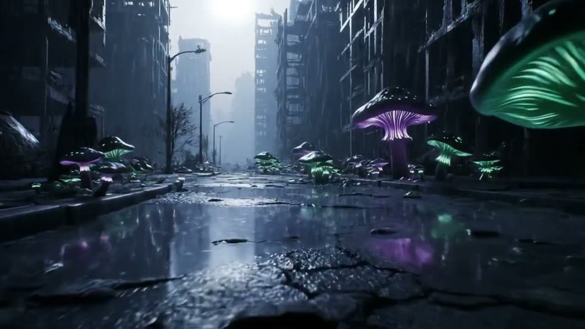

The scene is a rain-slicked, crumbling street in a forgotten c…
MOO-020MoodGoogle Veo (official guide example)by Google Cloud (official Veo prompt guide)2026-10-17

Atmospheric details: floating dust motes in a sunbeam, shimmering heat haze, reflections on wet pavement, leaves scattered by the wind Example The following video demonstrates building an immersive world
Prompt
The scene is a rain-slicked, crumbling street in a forgotten city, shrouded in perpetual twilight. Giant, bioluminescent mushrooms have sprouted from the cracked asphalt, casting an eerie, pulsating green and purple glow onto the decaying facades of skeletal skyscrapers. A gentle, constant rain creates shimmering reflections in the puddles below, and the only sounds are the soft patter of rain and a low, otherworldly hum from the glowing fungi
Our Seedance 2.5 adaptation
[ADAPTED for Seedance 2.5 by Grok Bot; not the creator's prompt. Follows the official BytePlus Seedance 2.5 prompt guide: asset binding → one-sentence summary → integer-second timeline → consistency notes → negatives.] API: duration 12, ratio 21:9, resolution 1080p, generate_audio true. Summary: A 12-second atmospheric slow crane-down through a rain-slicked, crumbling city where giant bioluminescent mushrooms grow from the cracked asphalt, pulsing green and purple light onto skeletal skyscrapers. 0-5s: Extreme wide shot from above the rooftops. The camera slowly cranes down through constant gentle rain. 5-9s: At street level, the camera glides forward over puddles that mirror the pulsing glow. Mushroom caps breathe light in a slow rhythm. 9-12s: The camera settles low beside a puddle as a drop lands and ripples the reflection. Hold. Keep consistent: perpetual twilight, steady soft rain, eerie calm. No people. Audio policy: only soft rain patter and a low otherworldly hum from the fungi. No music, BGM, score, melody, synth or ambient pad. No subtitles.
Tags: eerie, post-apocalyptic, bioluminescent